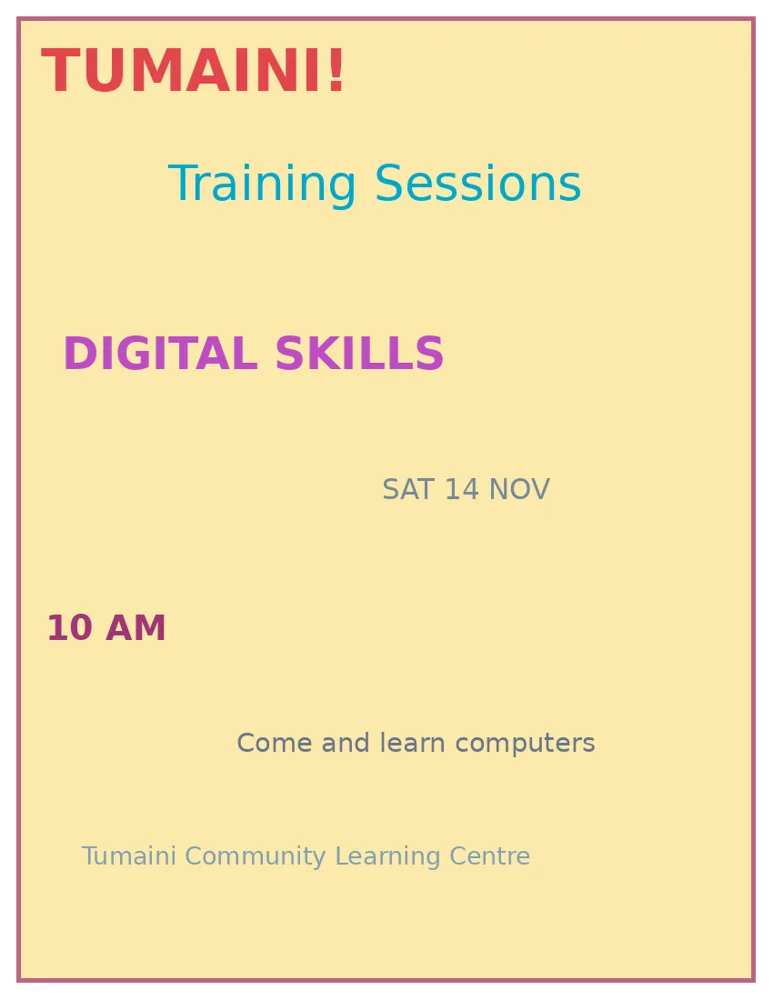

Working with Text, Images and Colour
Understand raster and vector images, readable typography and useful colour choices.
Lecture notes
Getting started: one notice, three design choices
Imagine seeing a workshop announcement on a noticeboard or in a class WhatsApp group. What would you look for? Usually you want to know what the event is, when it happens and where to go. You may notice a photograph or symbol first, but you need readable words to understand the message.
This lecture explains three elements that work together in almost every publication: images show or illustrate the subject, text communicates the details, and colour helps readers identify and organise information. A good design makes these parts work together instead of competing for attention.
After studying the lecture, you should be able to distinguish raster from vector graphics, select common image formats, arrange readable text, choose a suitable colour palette and improve a crowded notice. You do not need previous experience with Photoshop, Illustrator or InDesign.
1. Choose graphics that suit the message
A graphic is any visual element used in a publication, including a photograph, logo, screenshot, icon or illustration. Two pictures may look similar on a screen but be stored very differently. The two main types are raster and vector graphics.
1.1 Raster graphics: pictures made from pixels
A raster image, sometimes called a bitmap, is made from a grid of tiny coloured squares called pixels. Think of a mosaic: when you stand back, many small tiles appear to form a single picture. A digital photograph works in a similar way. Each pixel stores a colour, and together the pixels form the image.
Photographs taken with phones, screenshots and scanned pages are raster images. Raster graphics are useful for photographs because they can represent gradual changes in light, colour, texture and shadow.
Every raster image has pixel dimensions. An image measuring 1,200 × 800 pixels is 1,200 pixels across and 800 pixels down. It contains 1,200 × 800 = 960,000 pixels. That tells you how many pixels are recorded, not how many centimetres wide the image will appear on paper.
If a small photograph is enlarged too much, its existing pixels are spread over a larger area. It may look blurry or show square blocks. This is pixelation. Enlarging an image does not automatically recover details that were never recorded.
Figure 1. Enlargement can make individual pixel blocks visible in a raster image.
Tumaini example: A clear photograph of students using computers could help people recognise what the workshop is about. However, a tiny photograph copied from a thumbnail may look blurred if stretched across the whole poster.
1.2 Vector graphics: drawings made from shapes
A vector graphic is described through points, lines, curves and shapes rather than a fixed grid of coloured pixels. The software stores instructions about the shapes and redraws them when the graphic changes size. That is why a vector logo normally stays sharp when enlarged.
Imagine drawing a small circle and a large circle with a compass. The size changes, but the rule for drawing a circle stays the same. Vector artwork works more like such instructions than like a mosaic of coloured squares.
Vectors are well suited to simple logos, arrows, icons and diagrams. They are not automatically better for photographs, because a photograph contains complex textures and many small colour changes. One publication can contain both types.
Tumaini example: Use a raster photograph to show students at computers, and a vector book or lightbulb symbol for the learning centre's logo. Each graphic has a different job.
| Question | Raster | Vector |
|---|---|---|
| What forms the picture? | Coloured pixels | Points, paths and shapes |
| Most suitable for | Photographs, scans, screenshots | Logos, icons, simple diagrams |
| When greatly enlarged | May look blurry or blocky | Usually keeps smooth edges |
| Common examples | JPEG, PNG | SVG, editable Illustrator artwork |
Remember: You do not need to choose only raster or only vector for a whole publication. Select the type that suits each visual element.
1.3 File formats: JPEG, PNG, SVG and PDF
A file format determines how information is stored. The letters after the last dot in a filename form its extension. For example, students.jpg is a JPEG file. The extension provides a useful clue about the format, but it does not guarantee that the image is high quality.
| Format | Typical purpose | Important point |
|---|---|---|
| JPEG (.jpg) | Photographs with many colours | Usually creates smaller files by discarding some detail; no transparency |
| PNG (.png) | Screenshots, clear graphic edges, transparent backgrounds | Uses lossless image compression; can be larger for photographs |
| SVG (.svg) | Scalable logos and shape-based illustrations | Usually vector-based, although some SVGs contain raster images |
| PDF (.pdf) | Sharing and printing a completed publication | A document format that may contain text, raster images and vector graphics |
Transparency means that an image can have areas through which the background behind it is visible. A transparent logo can sit on a coloured poster without a white rectangle around it. JPEG does not provide this type of transparency, while PNG and suitable SVG artwork can.
Compression reduces the storage space used by a file. Lossy compression can remove some picture information to reduce size; JPEG commonly uses it. Lossless compression preserves the stored image information, as PNG does. Image processing and compression will be studied in greater detail in the final lecture.
Also distinguish between an editable working file and a final exported file. You may need the original design file to change a heading later, even if you have already shared the finished notice as a PDF.
1.4 Cropping and resizing are not the same
Cropping removes unwanted areas around the edges of an image. Cropping a photograph of three students to focus on one student changes which part of the scene is visible. Resizing changes the image's dimensions or the size at which it is displayed. A picture can be resized without cutting away any part of the scene.
Do not confuse pixel dimensions with file size. Dimensions such as 1,200 × 800 describe pixels across and down. File size, often measured in kilobytes (KB) or megabytes (MB), describes the storage the file uses. Two 1,200 × 800 images may have different file sizes because they use different formats or compression settings.
| Action or term | What changes? | Example |
|---|---|---|
| Crop | Part of the picture is removed | Remove unwanted space at the edge |
| Resize | Dimensions or displayed size change | Fit the photograph into a smaller notice area |
| Pixel dimensions | Count of pixels horizontally and vertically | 1,200 × 800 pixels |
| File size | Amount of storage used | 320 KB or 2 MB |
Once you have chosen a suitable image, the next task is to organise the words so that readers can find the workshop details quickly. This is where typography becomes important.
2. Typography: organising words for readers
Typography is the selection and arrangement of text to make a message clear, readable and visually organised. It involves more than choosing a decorative font: it includes text size, boldness, spacing, alignment and the order in which information attracts attention.
2.1 Typeface, font, serif and sans-serif
A typeface is a family of letter designs, such as Arial or Georgia. A font is a particular variation used on the page, for example Arial Bold at 18 points. In everyday use, people sometimes call both simply a font.
A serif typeface such as Georgia has small finishing strokes on some letters. A sans-serif typeface such as Arial has simpler letter ends. Neither is always the best choice; readability, audience and consistency matter more than choosing an unusual style.
Font size affects how large letters appear. Font weight describes how light or bold they look. Bold text is useful for emphasis, but if every line is bold, nothing stands out. Beginners can often achieve a good result by using one readable typeface family with two or three clear sizes.
2.2 Visual hierarchy: what should appear first?
Visual hierarchy is the arrangement of information according to importance. In an event notice, readers should quickly recognise the main title before moving to the explanation, date, time and venue.
BASIC COMPUTER SKILLS WORKSHOP
Learn to create documents and organise files
When: Saturday, 10:00 a.m.
Where: Community Hall
The title is large and bold because it identifies the event. The short sentence tells readers what they will learn. The time and venue are smaller but clearly labelled and grouped together. Good typography allows the reader to understand the basic message in a few seconds.
Figure 2. Different text sizes and positions create a clear reading order.
2.3 Alignment, line spacing and white space
Alignment means arranging elements along a common edge or line. For example, placing several lines of text along the same left edge makes them easier to follow. Centred headings can be useful, but centring long paragraphs often makes reading more difficult.
Line spacing is the distance between lines. If lines are too close, the words look crowded; if they are too far apart, one paragraph may appear disconnected. White space is the unoccupied area around text and graphics. It does not have to be white: its purpose is to give different pieces of information room and help readers see what belongs together.
For Tumaini's notice, keep the time and venue near each other because they are related. Leave space between the title, photograph and event details. Make sure the text is easy to see against its background; this difference is called contrast.
Check your own design: Can readers identify the event name first? Do they find the time and place easily? Are the headings and body text consistent? If the answer is no, adjust the hierarchy before adding decoration.
Clear text still needs appropriate colour. We now consider colour as a way to support—not replace—the reading order.
3. Working with colour
Colour attracts attention, separates related information and helps a publication look consistent. It is most effective when there is a reason for using it. A notice with many unrelated bright colours may catch the eye but still be difficult to understand.
3.1 Hue, saturation and lightness
Hue is the basic colour family, such as red, green or blue. Saturation describes how vivid or muted a colour appears. Bright orange is highly saturated, while a dull grey-orange is less saturated. Lightness describes how light or dark a colour is, such as pale blue compared with navy blue.
These ideas matter for contrast. Light yellow writing against a white background is difficult to see because the colours are similar in lightness. Dark navy writing on a pale background is usually easier to read. A visually attractive combination is not useful if students must struggle to read it.
3.2 RGB and CMYK: screen colours and printing colours
Phones, computer screens and televisions display colours using light. A widely used screen colour model is RGB, meaning Red, Green and Blue. Many printing methods combine inks or toner using CMYK: Cyan, Magenta, Yellow and Key (black).
| Question | RGB | CMYK |
|---|---|---|
| What produces the colour? | Light from a screen | Ink or toner on paper |
| Common use | Digital displays | Many colour printing workflows |
| Why does it matter? | Shows colours to the screen reader | Helps prepare and evaluate printed output |
A teal heading that looks bright on a phone may appear different on paper. Screens emit light, while paper reflects light. The printer, paper and settings also affect the result. Therefore, check a printed proof when a publication will be printed.
3.3 Building a simple palette
A colour palette is a small, deliberate selection of colours used together. For an educational notice, you might choose a pale background, dark navy body text and teal headings. Orange could highlight one important item, such as a date, but it should not compete with every sentence.
Do not depend on colour alone to communicate meaning. Instead of only making a deadline red, write Registration closes today as well. This helps readers with colour-vision differences and people reading a black-and-white printout.
We now have three connected choices: a suitable picture or symbol, clearly organised words and a restrained palette. Let us apply all three to the same notice.
4. Worked example: improving the Tumaini notice
Imagine that the first notice contains a tiny stretched photograph, five different fonts, an event time far away from the venue and bright colours behind every line. The details may be technically present, but readers have difficulty finding them.

Figure 3. Examine the notice and consider which details are difficult to find or read.
Begin the improvement with the message, not an effect. Make Basic Computer Skills Workshop a clear heading. Place the supporting details underneath and keep the time and venue together. Use a good-quality raster photograph if one is relevant, alongside a small scalable logo. Use one readable typeface family, leave space between sections and choose a small colour palette with adequate contrast.
| Element | Problem | Better choice and reason |
|---|---|---|
| Image | A tiny photograph is enlarged until blurry | Use a clearer raster photo at an appropriate size; keep the logo crisp |
| Words | Title and supporting details look equally important | Give the title greater size and group time with venue |
| Typeface | Many unrelated styles compete | Use one family with consistent heading and body variations |
| Colour | Bright text on bright backgrounds | Use a pale background, dark text and limited accents |
Notice that none of these improvements requires an advanced software command. They require thoughtful decisions about what the reader should understand.
5. Check your understanding
Try these short situations before moving to the longer review questions. Give a reason for each answer, not just a one-word label.
- A college logo becomes blurry on a large poster. Which type of graphic would normally be a better starting point for a simple logo?
- You remove empty space from the side of a photograph. Did you crop or resize it?
- A workshop notice contains the correct time, but no one notices it. What could be changed in the typography or layout?
- A notice must appear on phones and also be printed. Why should the colours be checked in both settings?
Key terms
| Term | Meaning |
|---|---|
| Pixel | A small coloured part of a raster image |
| Raster | Image made from a grid of pixels |
| Vector | Artwork described by points, lines and shapes |
| Pixelation | Visible squares or loss of clarity after excessive enlargement |
| Crop | Remove part of an image from its edges |
| Resize | Change an image's displayed size or dimensions |
| Typography | Choosing and arranging text for readability |
| Hierarchy | Visual order of importance |
| Contrast | Difference that makes an element easier to distinguish |
| Palette | A selected group of colours used together |
The next lecture explains how to plan where these images, words and colours belong on a publication page.
Simple practical activity
Redesign a small notice
Create a simple one-page notice with one clear title, two supporting details and a limited colour palette. Explain whether the main illustration is better saved as raster or vector.
Read the full guided practical instructions
STUDENT ACTIVITY WORKSHEET
Complete the essential activities on paper. If suitable software is available, reproduce the final design digitally after the tutorial.
Student name: __________________________________________ Registration no.: _______________________
Activity A — Choose a suitable graphic
For each item, choose raster or vector as the most useful starting point, and write one reason. More than one format may sometimes be acceptable when your reason is sound.
| Publication item | Type (raster/vector) | Reason |
|---|---|---|
| A photo of students using computers | ____________________ | ____________________________ |
| A simple book-shaped college logo | ____________________ | ____________________________ |
| A scanned handwritten letter | ____________________ | ____________________________ |
| A line icon for the notice heading | ____________________ | ____________________________ |
Activity B — Critique the first notice
Study the original notice below. Identify THREE specific problems involving typography, layout or colour. Explain briefly how each problem affects the reader.
1. Problem: ___________________________________________________________________________________ Improvement: _________________________________________________________________________________
2. Problem: ___________________________________________________________________________________ Improvement: _________________________________________________________________________________
3. Problem: ___________________________________________________________________________________ Improvement: _________________________________________________________________________________
Activity C — Sketch a clearer notice
Design a new version of the same announcement. Preserve the event name, date, time and organisation. Use a main heading, a short supporting line, one or two type styles and a limited colour palette. You may use pencil and labels.
Selected text colour: _______________________ Background: _______________________ Accent: _______________________
Activity D — Explain your design
Write three reasons why your design is easier to read than the original notice. Refer to at least one image or format choice, one text/typography choice and one colour choice.
1. ______________________________________________________________________________________________
2. ______________________________________________________________________________________________
3. ______________________________________________________________________________________________
Submission checklist
- Completed the four image choices and reasons.
- Identified three specific weaknesses in the sample notice.
- Prepared one legible notice sketch with essential event details.
- Explained three improvements using relevant design vocabulary.
Review questions
Answer the first questions using the definitions, then use the Tumaini notice to show how the ideas apply in practice.
- What is a pixel, and how do pixels make up a raster image?
- Explain two differences between raster and vector graphics. Give one useful example of each.
- Which formats could you use for a photograph and a transparent logo? Explain why.
- Explain the difference between cropping, resizing and file size.
- What is typography? Name three choices that improve the readability of a notice.
- What does visual hierarchy mean? Arrange the title, event explanation, time and venue in a sensible reading order.
- Explain what RGB and CMYK refer to and why screen colours can differ from printed colours.
- Choose three colours for a workshop notice and explain how you would use them.
- A notice contains a blurry image, five fonts and bright text on a bright background. Suggest one improvement for each problem.